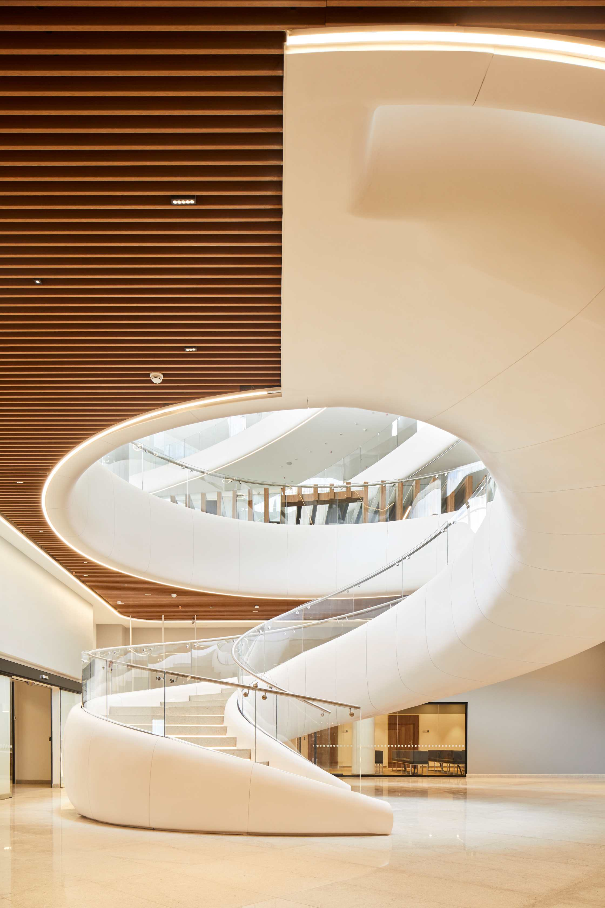
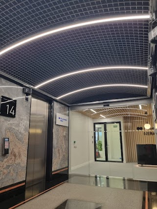

CTIC Luis Carlos Sarmiento Angulo - Bogotá (Colombia)

El Centro de Tratamiento e Investigación sobre Cáncer (CTIC) Luis Carlos Sarmiento Angulo, ubicado en el norte de Bogotá, se destaca por su diseño arquitectónico innovador y humanizado, que integra de manera armónica la funcionalidad médica con una estética acogedora.
Uno de los aspectos más sobresalientes de este proyecto es la implementación de un sistema de iluminación cuidadosamente diseñado, donde las luminarias curvas juegan un papel fundamental en la ambientación de los distintos espacios.
Para complementar esta arquitectura orgánica, se desarrolló un proyecto de iluminación que incorpora luminarias curvas adaptadas específicamente a las necesidades de cada espacio. Estas luminarias no solo siguen la sinuosidad de las estructuras, sino que también se integran de manera coherente con los materiales de tonos cálidos y naturales utilizados en el interiorismo, contribuyendo a una atmósfera homogénea y relajante en todo el centro.
Este enfoque directo y personalizado en el tratamiento de la iluminación no solo cumple con los estándares funcionales requeridos en un centro de salud de alta complejidad, sino que también enriquece la experiencia sensorial de sus usuarios. Al integrar de manera armoniosa la arquitectura y la iluminación, el CTIC se posiciona como un referente en diseño hospitalario que prioriza la calidad de vida y el bienestar emocional de quienes transitan por sus espacios.
Edificio Sollube - Madrid (España)

El Edificio Sollube, situado en la calle Pablo Ruiz Picasso 11, en el corazón financiero de Madrid, es un conjunto arquitectónico compuesto por tres edificios interconectados que suman 32.750 m² destinados a oficinas y espacios comerciales. Desde 3A Técnica formamos parte del equipo que llevó a cabo la rehabilitación de este emblemático inmueble, con el objetivo de modernizar sus instalaciones y adaptarlas a las necesidades contemporáneas de sus ocupantes.
Uno de los elementos más destacados en esta renovación es el diseño del lobby principal. Para crear un ambiente acogedor y sofisticado, se han instalado lámparas colgantes de la reconocida empresa Ineslam. Estas luminarias, fabricadas con materiales de alta calidad como metal y latón, presentan acabados en bronce que aportan calidez y elegancia al espacio.
Además, su diseño contemporáneo complementa la arquitectura del edificio, creando una armonía visual que impresiona a visitantes y usuarios por igual.
Este proyecto de renovación ha sido desarrollado a partir de la visión integral del cliente, quien buscaba combinar funcionalidad y estética para ofrecer espacios de trabajo de alta calidad. La colaboración con empresas especializadas en iluminación, como Ineslam, Garviled o PKM Iluminación, ha sido clave para materializar esta visión, asegurando que cada detalle contribuya al bienestar y confort de los ocupantes del edificio.
The Icon - Madrid (España)

El edificio The Icon, situado en el corazón de Madrid, se erige como un referente de modernidad y sofisticación en la arquitectura urbana de la ciudad. Este inmueble destaca no solo por su imponente estructura, sino también por la meticulosa atención al detalle en sus espacios interiores.
Para crear una atmósfera acogedora y elegante, se han diseñado luminarias arqueadas exclusivas que adornan estos lobbies. Estas piezas, concebidas con formas curvas y materiales de alta calidad, no solo proporcionan una iluminación óptima, sino que también aportan un elemento estético distintivo que armoniza con la arquitectura contemporánea del edificio.
El proceso de diseño de estas luminarias fue llevado a cabo con una atención personalizada, trabajando en estrecha colaboración con diseñadores de interiores y especialistas en iluminación. Cada detalle fue cuidadosamente considerado para asegurar que las luminarias no solo cumplieran con los requisitos funcionales, sino que también reflejaran la identidad única de The Icon.